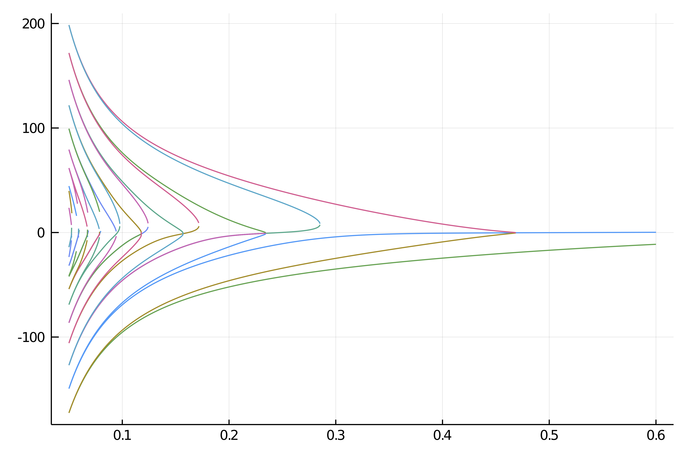

Deflated Continuation in the Carrier Problem
Chapman, S. J., and P. E. Farrell. Analysis of Carrier’s Problem. ArXiv:1609.08842 [Math], September 28, 2016. http://arxiv.org/abs/1609.08842.
In this example, we study the following singular perturbation problem:
It is a remarkably difficult problem which present many disconnected branches which are not amenable to the continuation method. We thus use the recently develiopped deflated continuatoipn method which builds upon the Deflated Newton (see Deflated problems) technics to find solutions which are different from a set of already known solutions.
We start with some import
using Revise
using LinearAlgebra, Parameters, Setfield, SparseArrays, BandedMatrices
using BifurcationKit, Plots
const BK = BifurcationKitand a discretization of the problem
function F_carr(x, p)
@unpack ϵ, X, dx = p
f = similar(x)
n = length(x)
f[1] = x[1]
f[n] = x[n]
for i=2:n-1
f[i] = ϵ^2 * (x[i-1] - 2 * x[i] + x[i+1]) / dx^2 +
2 * (1 - X[i]^2) * x[i] + x[i]^2-1
end
return f
end
function Jac_carr(x, p)
@unpack ϵ, X, dx = p
n = length(x)
J = BandedMatrix{Float64}(undef, (n,n), (1,1))
J[band(-1)] .= ϵ^2/dx^2 # set the diagonal band
J[band(1)] .= ϵ^2/dx^2 # set the super-diagonal band
J[band(0)] .= (-2ϵ^2 /dx^2) .+ 2 * (1 .- X.^2) .+ 2 .* x # set the second super-diagonal band
J[1, 1] = 1.0
J[n, n] = 1.0
J[1, 2] = 0.0
J[n, n-1] = 0.0
J
endWe can now use Krylov-Newton to find solutions:
N = 200
X = LinRange(-1,1,N)
dx = X[2] - X[1]
par_car = (ϵ = 0.7, X = X, dx = dx)
sol = -(1 .- par_car.X.^2)
optnew = NewtonPar(tol = 1e-8, verbose = true)
out, = @time newton(F_carr, Jac_carr, sol,
(@set par_car.ϵ = 0.6), optnew, normN = x -> norm(x, Inf64))
plot(out, label="Solution")First try with automatic bifurcation diagram
We can start by using our Automatic bifurcation method.
using ForwardDiff
D(f, x, p, dx) = ForwardDiff.derivative(t -> f(x .+ t .* dx, p), 0.)
dF_carr(x,p) = ForwardDiff.jacobian( z-> F_carr(z,p), x)
d1F_carr(x,p,dx1) = D((z, p0) -> F_carr(z, p0), x, p, dx1)
d2F_carr(x,p,dx1,dx2) = D((z, p0) -> d1F_carr(z, p0, dx1), x, p, dx2)
d3F_carr(x,p,dx1,dx2,dx3) = D((z, p0) -> d2F_carr(z, p0, dx1, dx2), x, p, dx3)
jet = (F_carr, Jac_carr, d2F_carr, d3F_carr)
optcont = ContinuationPar(dsmin = 0.001, dsmax = 0.05, ds= -0.01, pMin = 0.05, plotEveryStep = 10, newtonOptions = NewtonPar(tol = 1e-8, maxIter = 20, verbose = true), maxSteps = 300, detectBifurcation = 3, nev = 40)
diagram = bifurcationdiagram(jet..., 0*out, par_car,
(@lens _.ϵ), 2,
(arg...) -> @set optcont.newtonOptions.verbose = false;
printSolution = (x, p) -> (x[2] - x[1]) * sum(x.^2),
plot = true)However, this is a bit disappointing as we only find two branches. 
Second try with deflated continuation
# deflation operator to hold solutions
deflationOp = DeflationOperator(2.0, dot, 1.0, [out])
# parameter values for the problem
par_def = @set par_car.ϵ = 0.6
# newton options
optdef = setproperties(optnew; tol = 1e-7, maxIter = 200)
# function to encode a perturbation of the old solutions
function perturbsol(sol, p, id)
# we use this sol0 for the boundary conditions
sol0 = @. exp(-.01/(1-par_car.X^2)^2)
solp = 0.02*rand(length(sol))
return sol .+ solp .* sol0
end
# call the deflated continuation method
br, = @time continuation(
F_carr, Jac_carr,
par_def, (@lens _.ϵ),
setproperties(optcont; ds = -0.00021, dsmin=1e-5, maxSteps = 20000,
pMax = 0.7, pMin = 0.05, detectBifurcation = 0, plotEveryStep = 40,
newtonOptions = setproperties(optnew; tol = 1e-9, maxIter = 100, verbose = false)),
deflationOp;
perturbSolution = perturbsol,
printSolution = (x, p) -> (x[2]-x[1]) * sum(x.^2),
normN = x -> norm(x, Inf64),
)
plot(br...) We obtain the following result which is remarkable because it contains many more disconnected branches which we did not find in the first try.
